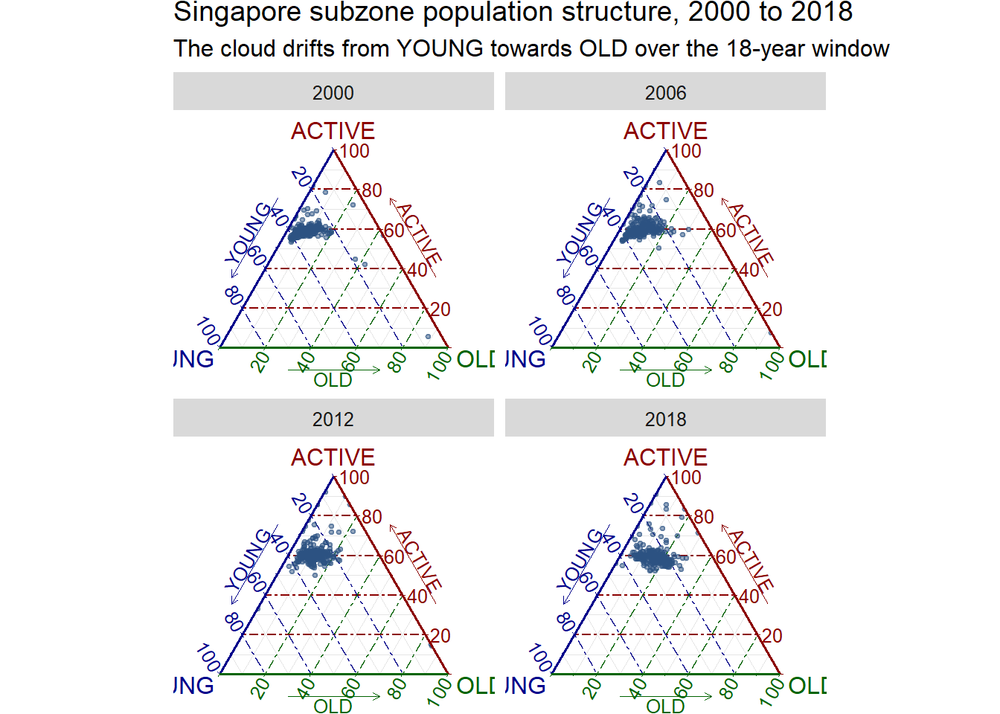
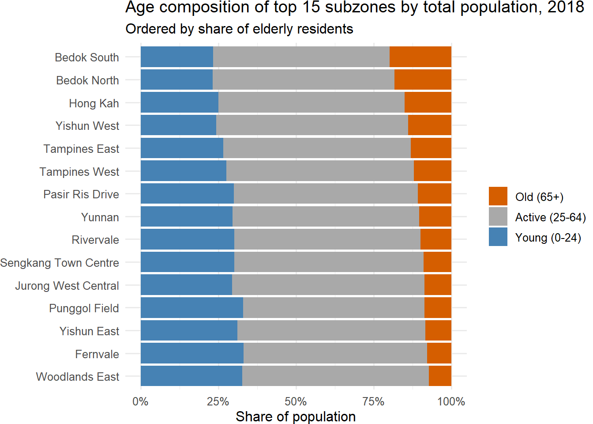
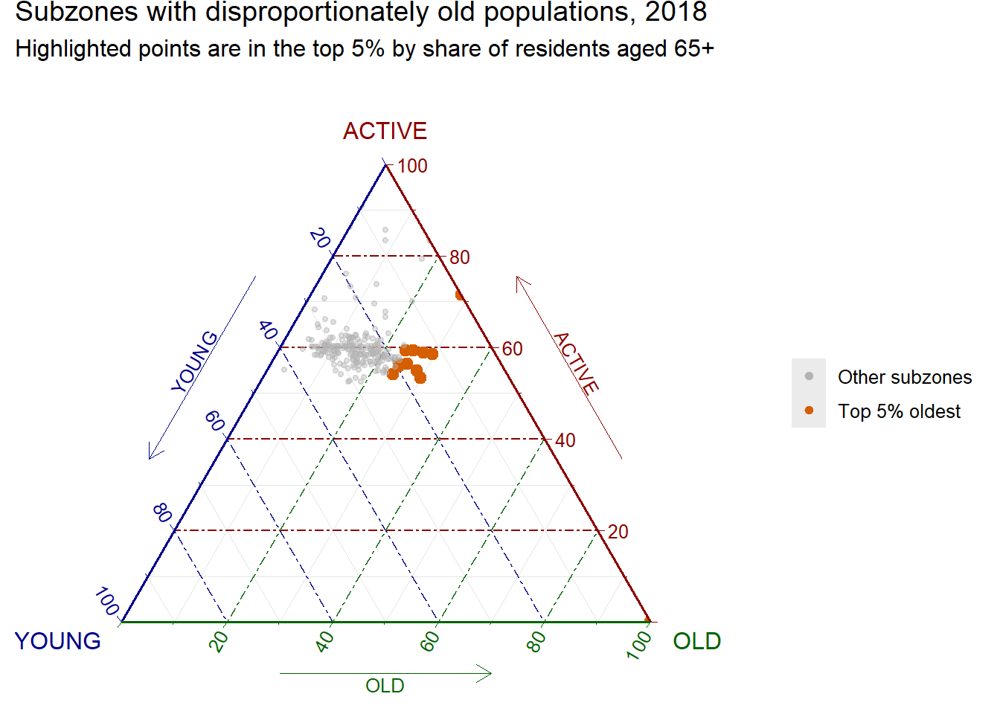

pacman::p_load(plotly, ggtern, tidyverse, knitr)Chapter 13: Creating Ternary Plot with R
Hands-on Exercise 5
13 Creating Ternary Plot with R
13.1 Overview
Ternary plots display the distribution and variability of three-part compositional data, meaning data where the parts must sum to a fixed total such as 1 or 100%. Common applications include demographic structure (young, economically active, old), soil composition (sand, silt, clay), voting share across three parties, and market share among three competitors.
The display is an equilateral triangle with each side scaled from 0 to 1. Each vertex represents 100% of one component. A point’s position is read by drawing a perpendicular from the point to each leg of the triangle. The intersections give the three component values, which by construction always sum to 1.
The chapter aims to cover:
- Deriving compositional measures from raw data using
dplyr - Plotting a static ternary diagram using the
ggternpackage - Plotting an interactive ternary diagram using
plotly - Exploring design alternatives that strengthen analytical communication
ImportantWhen is a ternary plot the right choice?
A ternary plot is appropriate only when the data has exactly three components that sum to a constant. With four or more components, a parallel coordinates plot or a stacked bar fits better. With three values that are independent rather than parts of a whole, a 3D scatter or a small-multiples scatterplot is the right call. Forcing non-compositional data into a ternary frame produces a chart that looks sophisticated but communicates nothing meaningful.
13.2 Installing and Launching R Packages
Three R packages are required:
- ggtern, a
ggplot2extension specially designed to plot ternary diagrams. It will be used for static ternary plots. - plotly, an R package for creating interactive web-based graphs. The
plot_ly()function supports a nativescatterternarytrace type, which is preferred overggplotly()conversion for ternary plots becauseggplotly()does not fully translateggterngeometries. - tidyverse, specifically
readr,dplyr, andtidyrfor data import and shape transformation.
knitr is also loaded so kable() can produce clean previews.
NoteThings to learn from the code chunk above
ggtern masks several ggplot2 functions when loaded. This is expected behaviour because the package overrides standard ggplot internals to support the triangular coordinate system. If conflicts arise elsewhere in a project, explicit namespacing with ggplot2:: or ggtern:: resolves them. pacman::p_load() installs missing packages and loads them in one call, which keeps the environment reproducible across machines.
13.3 Data Preparation
13.3.1 The Data
The dataset respopagsex2000to2018_tidy.csv is sourced from the Singapore Department of Statistics. It records resident population by planning area, subzone, age group, sex, and year from 2000 to 2018. The file is already in tidy long format with one row per (planning area, subzone, age group, sex, year, dwelling type) combination.
13.3.2 Importing Data
The code chunk below imports the CSV into R using read_csv() from the readr package.
pop_data <- read_csv("data/respopagsex2000to2018_tidy.csv")
kable(head(pop_data))| PA | SZ | AG | Year | Population |
|---|---|---|---|---|
| Ang Mo Kio | Ang Mo Kio Town Centre | AGE0-4 | 2011 | 290 |
| Ang Mo Kio | Ang Mo Kio Town Centre | AGE0-4 | 2012 | 270 |
| Ang Mo Kio | Ang Mo Kio Town Centre | AGE0-4 | 2013 | 260 |
| Ang Mo Kio | Ang Mo Kio Town Centre | AGE0-4 | 2014 | 250 |
| Ang Mo Kio | Ang Mo Kio Town Centre | AGE0-4 | 2015 | 260 |
| Ang Mo Kio | Ang Mo Kio Town Centre | AGE0-4 | 2016 | 250 |
13.3.3 Preparing the Data
To plot a ternary diagram, the data must be reshaped from long to wide format and three compositional measures derived: YOUNG (under 25), ACTIVE (25 to 64), and OLD (65 and above).
agpop_mutated <- pop_data %>%
mutate(Year = as.character(Year)) %>%
pivot_wider(names_from = AG, values_from = Population) %>%
mutate(YOUNG = rowSums(.[4:8])) %>%
mutate(ACTIVE = rowSums(.[9:16])) %>%
mutate(OLD = rowSums(.[17:21])) %>%
mutate(TOTAL = rowSums(.[22:24])) %>%
filter(Year == 2018) %>%
filter(TOTAL > 0)
kable(head(agpop_mutated))| PA | SZ | Year | AGE0-4 | AGE10-14 | AGE15-19 | AGE20-24 | AGE25-29 | AGE30-34 | AGE35-39 | AGE40-44 | AGE45-49 | AGE05-9 | AGE50-54 | AGE55-59 | AGE60-64 | AGE65-69 | AGE70-74 | AGE75-79 | AGE80-84 | AGE85over | YOUNG | ACTIVE | OLD | TOTAL |
|---|---|---|---|---|---|---|---|---|---|---|---|---|---|---|---|---|---|---|---|---|---|---|---|---|
| Ang Mo Kio | Ang Mo Kio Town Centre | 2018 | 180 | 320 | 300 | 260 | 300 | 270 | 330 | 430 | 470 | 270 | 360 | 310 | 300 | 270 | 190 | 150 | 60 | 60 | 1360 | 2740 | 730 | 4830 |
| Ang Mo Kio | Cheng San | 2018 | 1060 | 1080 | 1260 | 1400 | 1880 | 1940 | 2300 | 2090 | 2180 | 1080 | 2160 | 2150 | 2270 | 2130 | 1370 | 980 | 560 | 440 | 6680 | 16170 | 5480 | 28330 |
| Ang Mo Kio | Chong Boon | 2018 | 900 | 1030 | 1220 | 1380 | 1760 | 1830 | 1920 | 1900 | 1910 | 900 | 2070 | 2140 | 2170 | 2050 | 1570 | 1170 | 640 | 530 | 6290 | 14840 | 5960 | 27090 |
| Ang Mo Kio | Kebun Bahru | 2018 | 720 | 1010 | 1120 | 1230 | 1460 | 1330 | 1540 | 1700 | 1830 | 850 | 1880 | 1810 | 1750 | 1700 | 1240 | 870 | 540 | 430 | 5540 | 12690 | 4780 | 23010 |
| Ang Mo Kio | Sembawang Hills | 2018 | 220 | 380 | 500 | 550 | 500 | 300 | 290 | 420 | 550 | 310 | 550 | 560 | 450 | 410 | 290 | 220 | 140 | 140 | 2150 | 3430 | 1200 | 6780 |
| Ang Mo Kio | Shangri-La | 2018 | 550 | 670 | 780 | 950 | 1080 | 990 | 1100 | 1140 | 1230 | 630 | 1350 | 1420 | 1290 | 1150 | 830 | 680 | 360 | 340 | 4030 | 9150 | 3360 | 16540 |
NoteThings to learn from the code chunk above
pivot_wider() replaces the deprecated spread() function. It widens the dataset so each age group becomes its own column, which is required before summing across age bands. rowSums(.[4:8]) sums columns 4 through 8 by position, which corresponds to the five youngest age bands (0 to 24). This is concise but brittle, because if the column order changes upstream, the sums silently break. A safer alternative is rowSums(across(c("0_to_4", "5_to_9", ...))) using named columns.
filter(Year == 2018) restricts the analysis to a single cross-section so each subzone appears as one point on the ternary plot. filter(TOTAL > 0) removes subzones with zero population, which would otherwise create undefined proportions.
TipWhy these three age bands?
The choice of cut points (0 to 24, 25 to 64, 65+) reflects the standard demographic framing of dependency ratios. The young and old groups are economically dependent, while the active group represents the working-age population. A ternary plot of these three measures directly visualises the age dependency structure of each subzone in a single point.
13.4 Plotting Ternary Diagram with R
13.4.1 Plotting a Static Ternary Diagram
The ggtern() function works like ggplot() but expects three positional aesthetics: x, y, and z, mapping to the three vertices of the triangle.

ggtern(data = agpop_mutated,
aes(x = YOUNG, y = ACTIVE, z = OLD)) +
geom_point()
NoteThings to learn from the code chunk above
ggtern() automatically constructs the triangular coordinate system. The three aesthetics x, y, and z map to the three vertices, and the package internally normalises each row so the three values sum to 1. geom_point() works inside ggtern() just as it does in ggplot2, and most standard geoms have ternary equivalents. The default theme leaves the triangle unlabelled, which the next iteration fixes.
TipReading the plot
Each point is one Singapore subzone in 2018. The cluster sits closer to the ACTIVE vertex (right side) than to YOUNG or OLD, which means most subzones are dominated by working-age residents. A small group of points drifts towards the OLD vertex, indicating subzones with disproportionately ageing populations. Subzones near the YOUNG vertex are rarer in 2018, consistent with the overall demographic transition.
This is the analytical payoff of a ternary plot. A scatterplot of YOUNG against OLD would lose the ACTIVE dimension, and a parallel coordinates plot would lose the immediate visual sense of which subzones lean towards which extreme.
13.4.2 Adding Title and Theme
The default theme can be replaced with theme_rgbw() for cleaner gridlines and a title added via labs().

ggtern(data = agpop_mutated,
aes(x = YOUNG, y = ACTIVE, z = OLD)) +
geom_point() +
labs(title = "Singapore population structure by subzone, 2018",
subtitle = "Each point is one subzone; vertices represent 100% of the named age group") +
theme_rgbw()
NoteThings to learn from the code chunk above
theme_rgbw() is one of several ggtern themes (others include theme_bw(), theme_classic(), theme_dark()). It uses a clean white background with subtle gridlines, which improves the signal-to-ink ratio. The subtitle explicitly explains how to read the chart, which matters because ternary plots are unfamiliar to most readers and an in-chart legend reduces cognitive load. Titles and subtitles are part of the visualisation grammar, not decoration. A chart that travels well carries enough text to be read in isolation.
13.4.3 Plotting an Interactive Ternary Diagram
For interactive exploration, plot_ly() supports a native scatterternary trace type. This is preferred over ggplotly(ggtern_plot) because the latter does not faithfully translate ggtern geometry.
# Reusable function for annotation
label <- function(txt) {
list(
text = txt,
x = 0.1, y = 1,
ax = 0, ay = 0,
xref = "paper", yref = "paper",
align = "center",
font = list(family = "serif", size = 15, color = "white"),
bgcolor = "#b3b3b3", bordercolor = "black", borderwidth = 2
)
}
# Reusable function for axis formatting
axis <- function(txt) {
list(
title = txt,
tickformat = ".0%",
tickfont = list(size = 10)
)
}
ternaryAxes <- list(
aaxis = axis("Young"),
baxis = axis("Active"),
caxis = axis("Old")
)
plot_ly(
agpop_mutated,
a = ~YOUNG,
b = ~ACTIVE,
c = ~OLD,
color = I("black"),
type = "scatterternary"
) %>%
layout(
annotations = label("Singapore subzones, 2018"),
ternary = ternaryAxes
)
NoteThings to learn from the code chunk above
plot_ly() uses a, b, c (not x, y, z) for ternary aesthetics. This is a quirk of the underlying plotly.js API. tickformat = ".0%" formats the axis ticks as percentages with no decimals, which suits demographic share data.
The label() and axis() helpers are reusable. Defining them once keeps the layout call concise and avoids repetition if multiple ternary plots are produced. Interactivity adds details on demand, in line with the standard interaction pattern of overview first, zoom and filter, and details on demand. Hovering over a point reveals its three component values without requiring the reader to estimate from the gridlines.
TipReading the plot
The interactive version supports zoom, pan, and hover-to-identify. For a dataset with hundreds of subzones, this turns a dense static cluster into an explorable map. A reader investigating outlier subzones (those nearest the OLD vertex, for instance) can hover to retrieve the subzone name directly, rather than guessing from position alone.
This is the case for interactivity: it does not replace the static chart, however it answers questions the static chart provokes.
13.5 Exploring Alternatives
The base ternary plot answers the question “what is the distribution of age structures across subzones?”. The variations below answer richer questions and apply additional design principles.
13.5.1 Alternative 1: Colouring by Planning Area
Adding colour reveals whether subzones cluster geographically. Subzones in the same planning area should sit close together if local demographics are spatially correlated.

agpop_top <- agpop_mutated %>%
group_by(PA) %>%
filter(n() >= 3) %>%
ungroup() %>%
filter(PA %in% c("Bedok", "Tampines", "Jurong West", "Woodlands", "Sengkang", "Punggol"))
ggtern(data = agpop_top,
aes(x = YOUNG, y = ACTIVE, z = OLD, colour = PA)) +
geom_point(size = 2, alpha = 0.7) +
labs(title = "Population structure across selected planning areas, 2018",
subtitle = "Newer towns (Punggol, Sengkang) skew young; older towns (Bedok) skew old",
colour = "Planning Area") +
theme_rgbw()
NoteThings to learn from the code chunk above
Subsetting to six planning areas is intentional. Colour-coding more than seven to eight categories exceeds the eye’s discriminating capacity, which is the case for keeping the categorical colour count low. alpha = 0.7 mitigates overplotting where points cluster densely. The chosen planning areas span the development timeline of Singapore public housing, from mature estates (Bedok, Tampines) to recent towns (Sengkang, Punggol), which is a deliberate analytical framing rather than random selection.
TipReading the plot
Punggol and Sengkang sit visibly closer to the YOUNG vertex than Bedok. This matches the policy intuition that newer Built-To-Order towns attract young families, while mature estates ageing in place skew towards the OLD vertex. The ternary plot makes this demographic gradient visible in one chart, where a conventional bar chart would require three separate panels.
13.5.2 Alternative 2: Density Contours
When point density is high, individual points become hard to read. stat_density_tern() adds 2D density contours over the triangle, similar to a geom_density_2d() overlay on a Cartesian scatter.

ggtern(data = agpop_mutated,
aes(x = YOUNG, y = ACTIVE, z = OLD)) +
stat_density_tern(geom = "polygon",
aes(fill = after_stat(level)),
alpha = 0.6) +
geom_point(size = 0.8, alpha = 0.5) +
scale_fill_viridis_c(option = "C") +
labs(title = "Density of subzone population structures, 2018",
subtitle = "Contours reveal the modal age structure across all subzones",
fill = "Density") +
theme_rgbw()
NoteThings to learn from the code chunk above
stat_density_tern() is the ternary analogue of stat_density_2d(). It estimates a 2D density on the triangular surface. Layering geom_point() underneath the contours preserves the raw data, which is good practice. Smoothing without showing the underlying points hides where the model is over-extrapolating.
scale_fill_viridis_c(option = "C") applies the plasma palette, which is perceptually uniform and colour-blind safe. This is the kind of choice that older ternary diagrams often get wrong by reaching for rainbow palettes that look attractive but distort proportional reading.
TipReading the plot
The contours highlight a single dense mode at roughly 25% YOUNG, 65% ACTIVE, 10% OLD, which is the typical Singapore subzone in 2018. Outliers, visible as points outside the densest contours, are the analytically interesting cases that deserve follow-up. The contour layer compresses the cloud into a shape that the eye can read at a glance, while the underlying points keep the chart honest about what was actually measured.
13.5.3 Alternative 3: Faceting by Year for Temporal Comparison
The earlier filter restricted the analysis to 2018. Removing that filter and faceting by year reveals demographic transition over time, which is the question the dataset most naturally invites.

agpop_years <- pop_data %>%
mutate(Year = as.character(Year)) %>%
pivot_wider(names_from = AG, values_from = Population) %>%
mutate(YOUNG = rowSums(.[4:8])) %>%
mutate(ACTIVE = rowSums(.[9:16])) %>%
mutate(OLD = rowSums(.[17:21])) %>%
mutate(TOTAL = rowSums(.[22:24])) %>%
filter(Year %in% c("2000", "2006", "2012", "2018")) %>%
filter(TOTAL > 0)
ggtern(data = agpop_years,
aes(x = YOUNG, y = ACTIVE, z = OLD)) +
geom_point(size = 0.8, alpha = 0.5, colour = "#2C5282") +
facet_wrap(~ Year) +
labs(title = "Singapore subzone population structure, 2000 to 2018",
subtitle = "The cloud drifts from YOUNG towards OLD over the 18-year window") +
theme_rgbw()
NoteThings to learn from the code chunk above
facet_wrap() works inside ggtern() just as it does in ggplot2, and the triangular coordinate system is preserved across facets. Selecting four evenly spaced years (2000, 2006, 2012, 2018) instead of all 19 years balances detail against readability. The small-multiples principle applies: each panel must be readable on its own, and the eye must be able to sweep across them. Holding axis scales constant across facets is automatic for ternary plots because the triangle always spans 0 to 100% on each axis, which is one of the chart type’s strengths for temporal comparison.
TipReading the plot
The 2000 panel shows the cloud sitting closer to the YOUNG-ACTIVE edge. By 2018, the cloud has visibly drifted towards the ACTIVE-OLD edge. This is the demographic transition narrative for Singapore in a single composite image. A line chart of the proportion of elderly residents over time would convey the same trend, however the ternary facet shows that the transition is happening across all subzones simultaneously rather than concentrated in a few ageing pockets.
13.5.4 Alternative 4: Comparison with a Stacked Bar
It is worth asking when a ternary plot is genuinely better than the simpler stacked bar. The chart below shows the same data as a stacked bar of the top 15 subzones by total population.

top_subzones <- agpop_mutated %>%
arrange(desc(TOTAL)) %>%
slice_head(n = 15) %>%
mutate(YOUNG_pct = YOUNG / TOTAL,
ACTIVE_pct = ACTIVE / TOTAL,
OLD_pct = OLD / TOTAL) %>%
select(SZ, YOUNG_pct, ACTIVE_pct, OLD_pct) %>%
pivot_longer(cols = c(YOUNG_pct, ACTIVE_pct, OLD_pct),
names_to = "AgeGroup",
values_to = "Share") %>%
mutate(AgeGroup = factor(AgeGroup,
levels = c("OLD_pct", "ACTIVE_pct", "YOUNG_pct"),
labels = c("Old (65+)", "Active (25-64)", "Young (0-24)")))
ggplot(top_subzones,
aes(x = reorder(SZ, Share * (AgeGroup == "Old (65+)"), sum),
y = Share,
fill = AgeGroup)) +
geom_col() +
coord_flip() +
scale_y_continuous(labels = scales::percent) +
scale_fill_manual(values = c("Young (0-24)" = "#4682B4",
"Active (25-64)" = "#A9A9A9",
"Old (65+)" = "#D55E00")) +
labs(title = "Age composition of top 15 subzones by total population, 2018",
subtitle = "Ordered by share of elderly residents",
x = NULL, y = "Share of population", fill = NULL) +
theme_minimal()
NoteThings to learn from the code chunk above
The colour palette uses three colours chosen to remain distinguishable for the roughly 8% of men who cannot easily tell red from green: blue (#4682B4), neutral grey (#A9A9A9), and orange (#D55E00). The neutral grey for ACTIVE keeps attention on the analytical contrast between YOUNG and OLD. reorder() ranks subzones by their share of elderly residents, applying the principle that categorical axes should be ordered by the metric of interest rather than alphabetically. coord_flip() makes long subzone names readable.
TipComparing the two chart types
The stacked bar wins when the analyst needs to identify specific named entities and rank them. The ternary plot wins when the analyst needs to see the shape of the joint distribution across hundreds of entities and detect clusters or outliers. Neither is universally better, and the choice depends on whether the analytical question is about individual subzones (use the bar) or about the overall population structure (use the ternary). The same data supports two chart types because the analytical task differs.
13.5.5 Alternative 5: Highlighting Outliers
The final variation marks the five subzones with the highest share of elderly residents. The principle being applied is that annotations should direct attention to the analytical takeaway, rather than leaving the reader to find it.

agpop_flagged <- agpop_mutated %>%
mutate(OLD_share = OLD / TOTAL) %>%
mutate(is_old = OLD_share >= quantile(OLD_share, 0.95, na.rm = TRUE))
ggtern(data = agpop_flagged,
aes(x = YOUNG, y = ACTIVE, z = OLD)) +
geom_point(aes(colour = is_old, size = is_old, alpha = is_old)) +
scale_colour_manual(values = c("FALSE" = "grey70", "TRUE" = "#D55E00"),
labels = c("Other subzones", "Top 5% oldest")) +
scale_size_manual(values = c("FALSE" = 1, "TRUE" = 2.5), guide = "none") +
scale_alpha_manual(values = c("FALSE" = 0.4, "TRUE" = 1), guide = "none") +
labs(title = "Subzones with disproportionately old populations, 2018",
subtitle = "Highlighted points are in the top 5% by share of residents aged 65+",
colour = NULL) +
theme_rgbw()
NoteThings to learn from the code chunk above
Three aesthetics (colour, size, alpha) all map to the same flag. This is intentional layering, where each redundant encoding reinforces the analytical signal. Greying out non-highlighted points reduces visual noise without removing them. The reader still sees the full distribution as context for the highlighted outliers. The 95th percentile threshold is a defensible analytical choice, and the reader can question the threshold but not the transparency of the rule.
TipReading the plot
The five highlighted points sit visibly displaced towards the OLD vertex, well outside the main cloud. These are the subzones where ageing is most pronounced and where policy intervention (eldercare facilities, accessible infrastructure) would have the highest marginal impact. This is the chart that would belong in a policy brief, where the base ternary plot would belong in an exploratory report.
13.6 Summary
This chapter covered the construction of ternary plots for three-part compositional data. The key takeaways are:
- Ternary plots are appropriate only for three-part compositional data that sums to a constant. Misuse is the most common failure mode.
ggternextendsggplot2syntax cleanly and supports faceting, custom themes, and density contours.- Interactivity via
plot_ly()adds details on demand. This is most valuable when the dataset has hundreds of points and the reader needs to drill into specifics. - The same compositional data can be visualised as a stacked bar, a parallel coordinates plot, or a ternary plot. The choice depends on whether the analytical question is about individual entities (bar), full multivariate structure (parallel coordinates), or distributional shape (ternary).